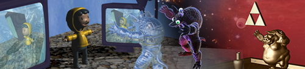
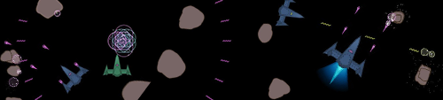
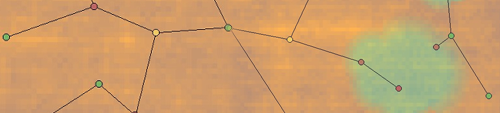
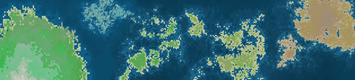

|
Peter Newman
I am a Computer Programmer, Ilustrator, and Artist.
My Computer Science interests are Procedural Generation, Artificial Intelligence, Computer Graphics, Computer Vision, Game Development, and Cognitive Science.
I'm currently looking for employment in the following roles: Technical Artist, Computer Programmer, Software Developer, Software Engineer, Art Director, Game Engine Prorammer, Video Game Designer, and Documentation.
LinkedIn |
Github |
Instagram |
Portfolio
|
|
|
Shadowgrove - 2024
Shadowgrove is a top down 2D roguelike with procedural map generation.
GitHub repo.
Demo video.
Coded shader programs in OpenGL to display torchlight and day/night cycle lighting effects.
Illustrated all art and implemented animation structure in C++ leading to an immersive world with cohesive art direction.
Designed, developed, and coded procedural map generation and chunk loading system creating organic adaptive levels.
Collaborated in a team of 5 to create and develop a game designed democratically in 11 weeks.
|
|
|
Coast Companion - 2024
CoastCompanion
An onboarding chatbot for coast capital created by
team Backbenchers.
I focused on UI, UX, Documentation, and Testing.
|
|

|
WebGL Shader Experiments - 2022
Demo1 |
Demo2 |
Demo3
Created a variety of interactive shaders in a 3D browser environment for the CPSC 314 Computer Graphics course at UBC. Coded in JavaScript and WebGL. Went above and beyond regular requiremnts to achieve an A+.
(All Demos) Rotate Scene: Left click & drag mouse, Move Scene: right click & drag mouse.
(Demo1) Move Targets: WASD
(Demo2) Change Scene: 1235
(Demo3) Move light source: WASD, Rotate Camera: NMJK
|
|

|
Space Shooter - 2020
Play the game in browswer! Requires keyboard.
I wrote this Asteroids-like space shooter with power-ups entirely in JavaScript (Canvas) with no imported graphics.
"arrow keys" - directional thrusters, "b" - dual lasers, "space" - central shot / charged shot.
It's fun. View images.
|
|

|
Landscape Generator - 2021
GitHub
A Java based graphical UI for traversing a procedurally generated node based traversable world with text-based descriptions of locations.
|
|

|
Map Generator - 2020
Generate Map
This was just a fun solo project to create maps with Perlin-like noise.
|
|
|
Floating Tree Generator - 2020
Generate Tree
Generative 2D art depicting random floating orgaic tree-like structures.
|
|
|
Xantrex Canada
Firmware Engineer (Co-op)
Burnaby, British Columbia, Canada
January 2023 - September 2023
As a co-op Firmware engineer my primary tasks were to build a suite of automated testing tools, ensure software updates functioned on new and legacy products, and formalize documentation and tests plans.
I was also able to flex my art experience to create app mockups and illustrations for other teams while I was running tests.
Developed automated testing tools such at CAN log playback tool. Updated, debugged, and expanded upon Automatic Configuration Test suite and RVC GUI.
Debugged and fixed old code and previous build files from that had not been updated in a decade that current software and tools relied on to function correctly.
Designed and created UI mock-ups for XANTREX App for Gateway device. Illustrated design schematics to display Xantrex communications network and electric wiring in vehicles.
|

|
Langara College
Marker II: (CPSC 2221 Database Structures)
Vancouver, British Columbia, Canada
January 2020 - April 2021
Developed marking schemes and rubrics for labs and student work.
Marked database designs, diagrams of relation schema, and student code (MySQL) within a tight schedule ensuring students had time to review feedback between assignments.
|
|
|
Moody's Analytics
Proctor
Vancouver, British Columbia, Canada
December 2011 - December 2020
Successfully managed and scheduled 5+ part-time contract workers for Vancouver Center by having weekly meetings to review daily operations and to ensure staff felt supported in their role and were able to maintain a work life balance.
Educated professionals taking exams regarding company policy and procedures to ensure order and adherence through the exam process.
Created spreadsheet in Microsoft Excel to better manage and display staff schedules to keep staff organised and without having any schedule conflicts.
This was a continuation of my experience at the Canadian Securities Institute which had been purchased by Moody's.
|
|
|
Benton Brothers Fine Cheese
Store Manager
Vancouver, British Columbia, Canada
October 2010 - December 2018
Revamped business' tracking spreadsheets in Microsoft Excel to report clear and consistent data to better display customer purchasing trends and presented every fiscal period.
Predicted demands for products by referring previous data, analyzing documented sales trends, and communicating with customers to maximize profit at various price points.
Researched history, production methods, and related facts of new products to write up engaging descriptions and pairing suggestions that enticed customers leading to additional purchases and greater sales.
Reduced food waste by over 90% and maintained it by changing ordering policies, implementing a program to use and/or sell products nearing the end of shelf-life at a premium resulting in higher profit margins.
Planned, organized, and hosted private cheese pairin events pre-selling tickets and ensuring all necessary products, accompaniments, glassware, seating, and permits were available and within budget.
|
|
|
Canadian Securities Institute Global Education Inc
Invigilator
Vancouver, British Columbia, Canada
October 2005 - December 2011
Maintained order and adherence to rules and procedures by outlining the company policy in quick yet informative 5 - 10 minute speeches to 40 plus professionals on average prior to each exam.
Created Invoice template in Adobe Illustrator using knowledge of required information and design principals to be filled out and uploaded bi-weekly.
Dealt with emergency situations and drills in building, before company policies had been put in place, in an orderly logical fashion while ensuring both the safety of students and security of confidential information resulting in recommendations for emergency protocols becoming implemented.
|
|
|
Contemporary Security Canada
X-ray Operator
Vancouver, British Columbia, Canada
Toronto, Ontario, Canada
December 2009 - July 2010
Provided the highest level of security for world leaders for the largest ever security event in Canada, the G20/G8 summit June 2010, by analyzing X-ray images of the contents of packages in order to tell other members of security were to locate dangerous contents.
Located and prevented prohibited items and dangerous objects from entering venue where world leaders discussed international trade (G20 summit Toronto 2010).
Located prohibited items and dangerous objects using skills acquired in X-Ray Object Recognition and X-Ray Job Specific Training, safeguarding the Vancouver Olympic Village (Vancouver Winter Olympics and Paralympics 2010).
Upheld regulations in a well communicated manner to maintain world-class service to Olympians and keep their temporary home safe and secure.
|
|
|
Caffè Artigiano
Assistant Manager | Barista | Trainer
Vancouver, British Columbia, Canada
February 2007 - July 2009
Fulfilled ordering, payroll, inventory, and staff scheduling tasks by addressing every need that had arisen due to a sudden change in ownership and management.
Instructed inexperienced staff at a struggling location on how to maintain job standards and excel at customer service.
Arrived on time or early for every shift by being reliable and never missed a day.
|
|
|
Restoration Hardware
Retail Sales Associate
Vancouver, British Columbia, Canada
November 2005 - February 2007
Cultivated a customer client list to ensure customer concerns were followed up with and documenting the results of call-backs leading to a happy clientele.
Corresponded with high profile clients, with honest information, to create a low-pressure sales atmosphere built on trust with the end goal of long term repeat customers base.
Helped out with back stockroom to ensure it was up to proper organization standards and inventory levels were accurate and to ensure quicker response for customers.
Conveyed furniture design principals and familiarity of work working to nurture understanding of quality product to customers.
|
|
|
JB Woodworks
CNC Operator | Apprentice Cabinetmaker
Suurey, British Columbia, Canada
September 2004 - May 2005
Operated million dollar flatbed CNC machine as the primary operator and user which stayed functional and became the company’s most profitable piece of equipment.
Conveyed ideas of furniture design that could be executed with computer-aided design and drafting software and implemented on the CNC machine resulting in useful demo projects.
Troubleshot how to best assemble and optimize yield and reduce waste of expensive materials keeping cost down and ensuring less impact on the environment.
Ensured production of flawless high end millwork components by understanding CAD models, and router paths in 3D space for use in curved bars and restaurant interiors.
|
|